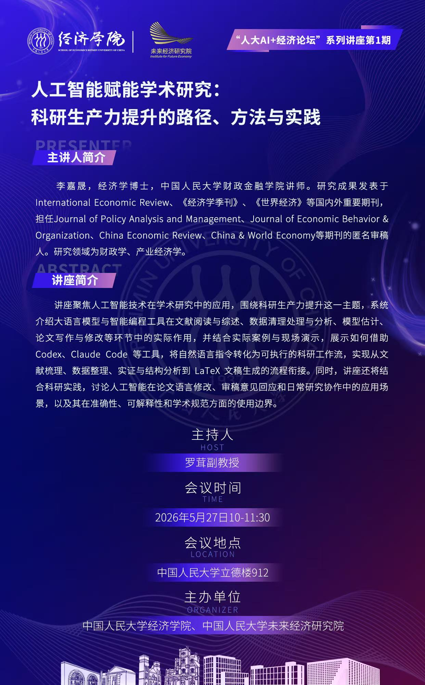

SERIES · 01 · AI · RESEARCH PRACTICE
人工智能赋能学术研究：科研生产力提升的路径、方法与实践
主讲人 李嘉晟 · 中国人民大学财政金融学院讲师
主持人 罗茸副教授
时间地点 2026年5月27日（周三）10:00–11:30 · 中国人民大学立德楼912
讲座聚焦人工智能技术在学术研究中的应用，介绍大语言模型与智能编程工具在文献阅读与综述、数据清理处理与分析、模型估计、论文写作与修改等环节的实际作用，并结合案例讨论科研工作流与使用边界。
获取第 1 期讲座资料